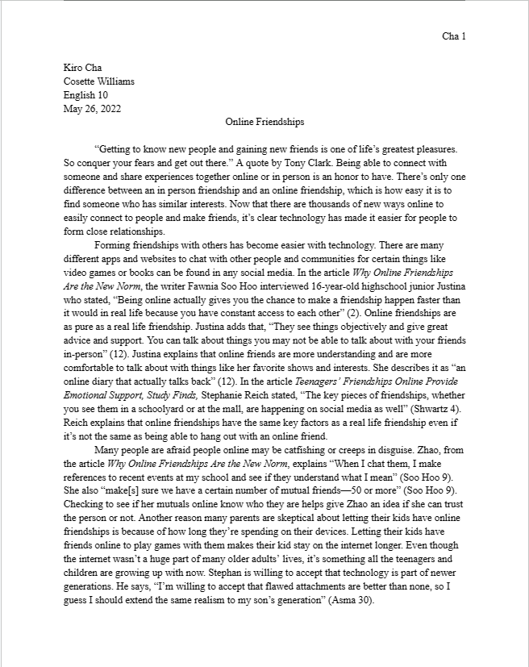

Choice of Career is a research essay I made earlier in the school year, the topic was a career of our choice so I chose to write about an occupation that I found interesting. The purpose of this essay was to do research on the career and determine if it was a job a person should pursue. I wrote this essay not only with just the research I did for it but also with personal feelings since the occupation is something I have a personal connection to. This essay shows off my more recent writing skills and how I’m able to write up text content.
Online Friendships was an essay I wrote during my sophomore year of high school in my English 10 class. The topic of the essay was about online relationships and how safe it was to make friends with people online. I wrote my essay defending online friendships and stated ways a person could communicate with others online safely. The purpose I wanted my essay to have was to ease the paranoia and fear of parents with young children who actively use the internet. I believe I did an excellent job on my paper and thought it would be a great example of my writing work to display as it shows my writing skills.